欢迎词
持续更新中……
会议日程
持续更新中……
主旨宣讲人
持续更新中……
住宿交通
1住宿信息
住宿暂定为汉庭酒店，兰亭汇酒店，具体信息以后期会议通知为准，请参会者注意网站信息更新和查收邮箱。
汉庭酒店：
地址：北京市海淀区王庄路27号（城建四公司）
联系电话 ：(010)62313232
兰亭汇酒店：
地址：北京市海淀区成府路35号（城铁13号线五道口站西北角）
联系电话：(010)62619296
2交通信息
清华大学环境学院（中意环境节能楼）位于清华大学东门西北面约200米。
（1）北京西站：约15公里
1）乘坐特19路公交(北京西站-西苑枢纽站)，在北京西站上车，在东升园站下车，向北步行700米可抵达清华大学东门。（约1小时20分）
2）乘坐地铁9号线（国家图书馆方向），在北京西站上车，在国家图书馆站下车，换乘地4号线大兴线(安河桥北方向)，在中关村站下车(C东南口出)，步行至中关村南站，乘坐466路(或355路)公交，在清华东路西口站下车，步行200米至清华大学东门。（约50分钟）
（2）北京站：约18公里
乘坐地铁2号线(内环)，在北京站上车，在西直门站下车，换乘地铁13号线(东直门方向)，在五道口站下车(B西南口出)，步行700米至清华大学东门。（约1小时）
（3）北京南站：约17公里
乘坐地铁4号线大兴线(安河桥北方向)，在北京南站上车，在西直门站下车，换乘地铁13号线(东直门方向)，在五道口站下车(B西南口出)，步行700米至清华大学东门。（约1小时）
（4）首都机场T2航站楼：约33公里
1）乘坐机场大巴5路线（机场—中关村），在中关村（4号桥）站下车，①可打的至清华大学东门；②可步行至保福寺桥西站，乘坐913路(或333外，466路)公交，在清华东路西口站下车，步行200米至清华大学东门。（约1小时40分）
2）乘坐地铁机场线，在三元桥站下车，换乘地铁10号线(外环)，在知春路站下车，乘坐地铁13号线(东直门方向)，在五道口站下车(B西南口出)，步行700米至清华大学东门。（约1小时30分）
观光信息
清华大学艺术博物馆
清华大学艺术博物馆现有藏品一万三千余件，品类包括书画、织绣、陶瓷、家具、青铜器及综合艺术品等六大类。藏品绝大多数来自美术学院自1956年以来历年的收藏，以及校友及社会贤达的捐赠。艺术博物馆将充分展示馆藏精品，收纳最新原创成果，推进国内外馆际交流，实现资源共享，共同延续人类文明历史的源流。
在这里，您将感受到文化与心灵的碰撞，体验一次身临其境的艺术审美之旅。化万物之变，以传承致远；揽海纳之势，以求索创新。清华大学艺术博物馆自全面向公众展示之日起，融汇中华文明历史创造者的智慧，展现百年清华深厚的人文底蕴，为创建世界一流大学的现代综合性艺术博物馆绘制璀璨篇章。
【常设展览】
- “清华藏珍——清华大学艺术博物馆藏品展”

“清华藏珍——清华大学艺术博物馆藏品展”囊括青铜、书画、瓷器、织绣、家具五个艺术门类，共计五百余组件藏品。其中书画、瓷器、织绣和家具这四个门类的四百五十余组件藏品绝大多数来自于原中央工艺美术学院的旧藏。本次展览所选藏品既着力体现各艺术门类的完整发展体系，又重点突出名器精品，力求体现馆藏特色。书画有明代吕纪《雪梅锦鸡图》、丁云鹏《洗象图》、祝允明《草书苏轼前赤壁赋》，清代王翬《仿江贯道雪溪唤渡图》、任伯年《苏武牧羊图》，近代齐白石《四季图》四条屏、徐悲鸿《九方皋》等煌煌巨迹；瓷器以清康、雍、乾三朝时期景德镇御窑厂烧造的瓷器为主，如清康熙胭脂水压手杯、清雍正釉里红龙纹油锤瓶、清乾隆青花竹石玉壶春瓶等名瓷精粹；织绣有明代刻丝凤穿牡丹团花，清代“无量寿尊佛”刻丝佛像、红纱地戳纱金玉满堂女氅衣、蓝地刻丝云龙立水长袍等名品杰作；家具有明代黄花梨四面齐琴桌、黄花梨矮翘头案、黄花梨圈椅等传世精品。虽篇幅有限，难窥全貌，仍可看作是清华大学艺术博物馆众多珍品的缩影。
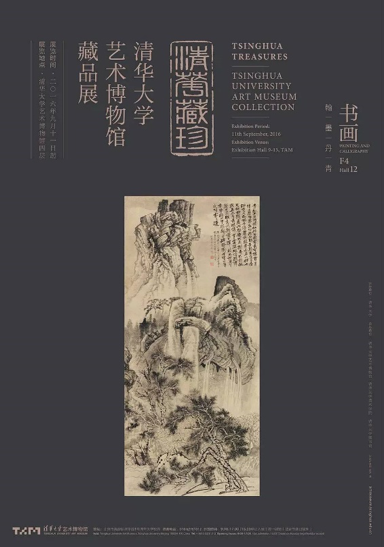 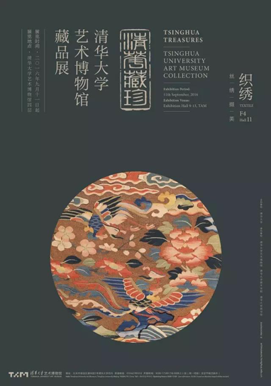 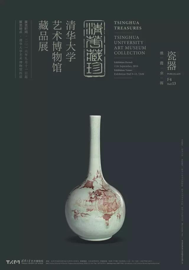
【往期展览】
- 对话达芬奇/第四届艺术与科学国际作品展
展览包含列奥纳多·达·芬奇的60幅《大西洋古抄本》手稿真迹、装置模型和《最后的晚餐》（约1611-1616，维斯皮诺临摹），同时并置呈现当代国际艺术与科学领域最新的艺术创作。展览从多领域、多角度阐释艺术与科学的关系，跨越时间与空间界限，探寻物质与非物质因缘，激起东西方文化思潮碰撞，启迪人类文明时代方向，用“穿越”的勇气和眼光去寻找和发现其中隐秘的哲学意义和现实思考。
部分作品：
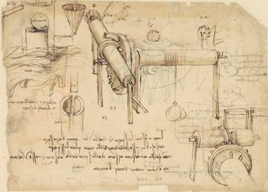 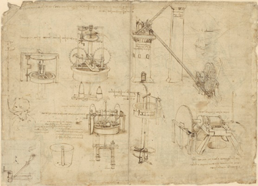- 竹简上的经典——清华简文献展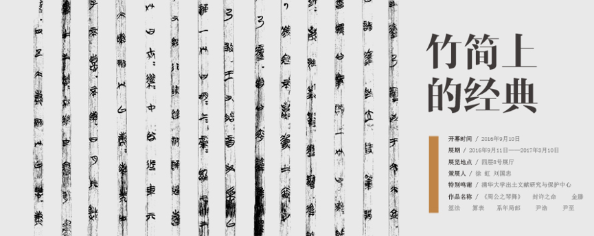
“清华简”属战国中期楚墓出土文物，数量一共约有 2500 枚（包括少数残断简），总字数近 6 万字，以经、史类经典为主。由于其在秦之前就被埋入地下，未受到“焚书坑儒”的冲击，能够最大限度地呈现先秦古籍的原貌。对于了解中华文明的初期面貌和发展脉络，研究简牍形制和古文字等方面具有重要价值。
- 从酒神赞歌到阿卡迪亚：马库斯吕佩尔茨作品展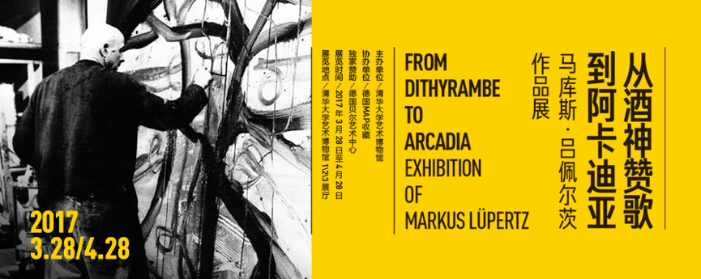
展览涵盖吕佩尔茨自1968年至今各阶段的代表作品共计104件，包括88件架上绘画和16件雕塑作品。“酒神赞歌”系列是吕佩尔茨早期重要的绘画作品，代表着激情与狂热，而“阿卡迪亚”系列是他近十年的创作，是一种美好想象的乌托邦，从“酒神赞歌”到“阿卡迪亚”，既是吕佩尔茨个人艺术发展的演变与升华，也是对当代社会和人性的美好期盼。这种饱含哲思的艺术创作风格一直延续至吕佩尔茨近年的创作，同时也启发我们以卓越的想象力去构筑人类未来的“阿卡迪亚”。
部分作品：
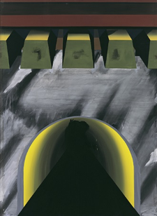 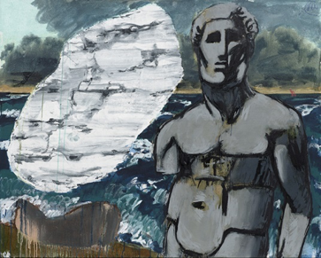 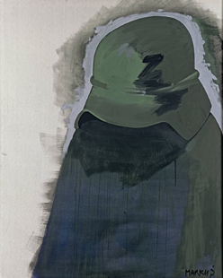
更多精彩内容和详细介绍请访问清华大学艺术博物馆官方网站：http://www.artmuseum.tsinghua.edu.cn/
清华园游览
游览路线：环境学院-主楼-新清华学堂-天大广场-二校门-日晷-清华学堂-同方部-仁者乐山智者乐水雕塑-大礼堂-图书馆-闻亭和闻一多雕像-水木清华-工字厅-古月堂-近春园。
主要景点介绍：
1) 主楼
主楼是清华大学的标志性建筑之一，是清华校园的中心。主楼楼群包括中央主楼、东主楼、西主楼。落成于1966年，总建筑面积达到76871平方米，由关肇邺等人设计。主楼的设计方案模仿了莫斯科大学主教学楼的造型特征，整个建筑气势雄伟，浑然一体，是清华园中规模最宏大的建筑群，充分体现了清华师生宽广的胸怀和豪迈的气魄。主楼在教学、科研中发挥着重要作用，现为信息科学技术学院、自动化系、软件学院等院系的所在地。同时，主楼也是学校举办重大活动、接待重要来宾的主要场所。各国学术大师，政界、商界领袖，如历届诺贝尔奖获得者，美国前总统克林顿、小布什，联合国秘书长安南，微软创始人比尔·盖茨等，都曾在中央主楼发表演讲。
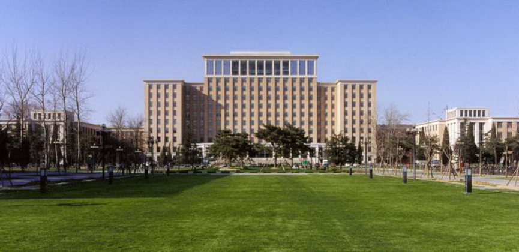2) 日晷
日晷是1920 年春天的时候，庚申级清华学生的毕业献礼，是清华园内最早的一批校友纪念物之一。日晷可供同学们上下课守时的参考，同时也含有珍惜时光、一寸光阴一寸金的意思。上部的晷盘由美国数学教员海晏士依照北京经纬度绘制，委托北京著名景泰蓝厂用银胎珐琅烧成。晷盘和底座中间用莲花纹样连接。
日晷底座用汉白玉材料，请工匠在校内雕作而成。底座四面刻文，正面镌刻中文“行胜于言”（校风），背面为“行胜于言”的拉丁译文，一侧中文“庚申级立”，另一侧为英文为CLASS 1920。正面的图案是中国古代的神兽，獬豸（音xie zhi），代表光明正义，传说能分辨忠奸，明辨是非，头上的角可以指出奸人并刺死奸人。
整个日晷是在1920年暑期完工的。日晷和清华的历史一样，历经沧桑，在数十年间三易其盘，一银二石，其座亦数易其位。现在看到的日晷座已是修补过的，日晷盘则是后来补做的，清华大学七十周年校庆时，日晷再次与世如面。
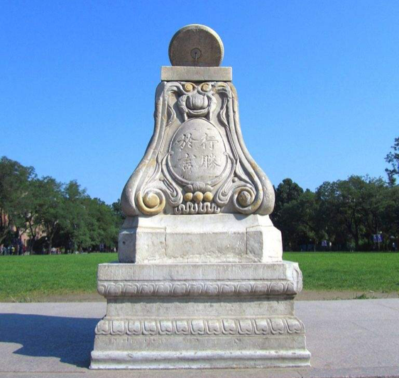3) 清华学堂
清华学堂除了是这座标志性建筑物的名字，也是“清华大学”的前身。它青砖红瓦，庄重别致，带着浓郁的德国古典风格。匾额“清华学堂”四字是清朝军机大臣那桐书写，选清华园为校址就是他于外务部会办大臣任内批准的。清华学堂分两期工程建成，以西建于1909 年至1911 年，以东建于1916 年，总面积约4650 平方米。学校同期兴建的还有二院、三院、同方部等一批建筑。待这批建筑基本竣工后，清华学堂于1911 年4 月29 日在清华园开学，这就是清华历史的开端。
925 年起，清华大学在清华学堂增设国学研究院，著名的国学“四大导师”——梁启超、王国维、陈寅恪、赵元任，著名考古学家李济、文学家吴宓在此任教，培养了整整一代国学人才，清华学堂这座建筑也平添浓重的国学文化色彩，培养了整整一代“国学”研究家。五十年代以后，梁思成为主任时期，清华学堂大楼成为建筑系专用系馆。梁思成、林徽因夫妇在这里为设计新中国的国徽、人民英雄纪念碑付出过汗水。十年动乱期间，该楼险遭毁灭之灾，门窗地板被拆的破烂不堪， 1977 年以后，学校大力修复。1909年，清华学堂破土动工，100年后的2009年，清华大学推出了“清华学堂人才培养计划”，这个计划旨在推动拔尖创新人才培养，学生们都是优中选优选拔出来的。此计划又被大家通俗地称为“姚钱数”计划。在这里：姚，指姚期智计算机科学实验班；钱，指钱学森力学班；数，指数学物理基础科学班。这三个清华的本科生教育实验班，承载着国内一流大学培育拔尖创新人才的使命。
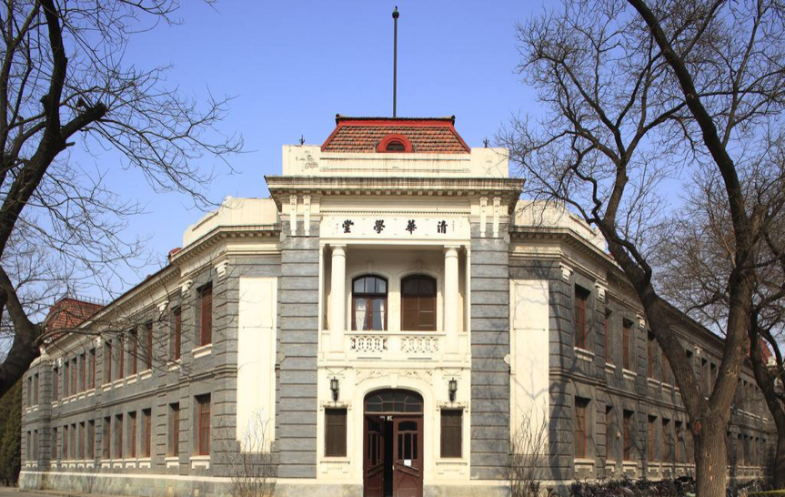4) 同方部
同方部是清华大学早期建筑之一，整个建筑灰砖墙身，红瓦坡顶，是一种欧式风格。建校初期它被当作礼堂使用，用来祭拜孔子。1923 年，学校成立了“德育指导部”，这才有了“同方部”的名字，当时是作为课外训育活动的场所。1925 年改办大学以后，因为有了新建的大礼堂（1920 年建成），同方部被用作小礼堂开展一些讲演、聚会和社团活动。
“同方部”的“同方”两字源于《礼记•儒行》中：“儒有合志同方，营道同术，并立则乐，相下不厌”这一句，“方”理解为“道义”，“法则”，“同方部”寓意“志同道合者相聚的地方”。如今，透过同方部古朴陈旧的外表，我们依然能够清晰地采集到许多珍贵的历史画面：1914 年，著名思想家梁启超先生来到了清华大学，就在同方部给清华学生做了题为《君子》的演讲，援引了《易经》中的“天行健，君子以自强不息”，“地势坤，君子以厚德载物”，用来激励学生刻苦学习，修身成才，担当起振兴中华民族的重任。从此“自强不息”和“厚德载物”称为校训，也是清华精神的象征。1936 年10 月鲁迅先生逝世时，清华文学会在同方部举行追悼大会，闻一多、朱自清等出席并做了讲演。也正是在同方部，1948年7月，清华学生自治会召开闻一多遇害两周年纪念会。朱自清在《挽一多先生》中写道“你是一团火，照见了魔鬼，烧毁了自己！遗烬里爆出个新中国！”刻画出了闻一多民主斗士的光辉形象。同方部现在是清华校友总会的所在地。
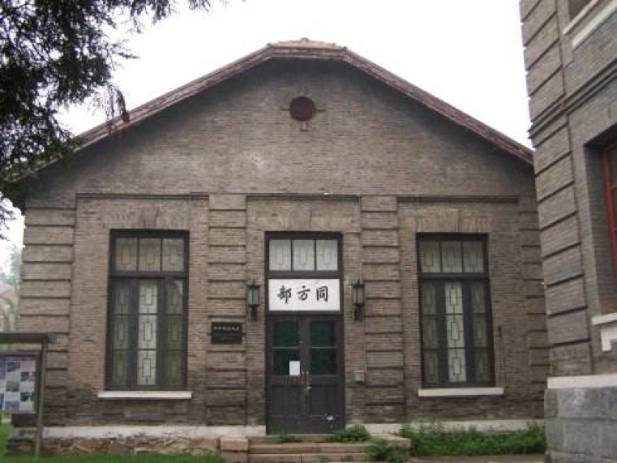5) 智者乐水，仁者乐山
“智者乐水，仁者乐山”纪念雕塑于2002年水利系建系50周年之际，由包括原国家主席胡锦涛学长和水利部部长汪恕诚学长在内的水利系65届校友共同赠送给母校的纪念雕塑。雕塑名取自《论语》中“子曰：知者乐水，仁者乐山。知者动，仁者静。知者乐，仁者寿。”雕塑的左边部分象征坚硬的山石，右边部分代表柔和的流水；智者反应敏捷，思想活跃，就像流水一样富于变化；仁者安于义理，仁慈宽容，就像山峦一样安定稳重。
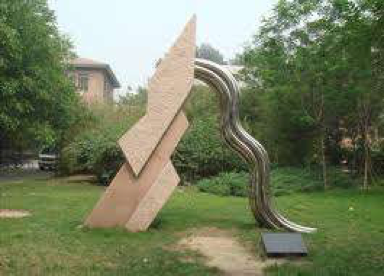大礼堂是一座罗马式与希腊式的混合建筑，在形式上模仿美国弗吉尼亚大学的图书馆，是由时任清华大学校长周怡春的耶鲁校友亨利·墨菲设计，清华早期四大建筑都出自这位设计师之手。始建于1917年9月，落成于1921年5月，建筑面积1840平方米，高44米，座位900多个，2009年展开对大礼堂的修缮工作，于2011年竣工，现大礼堂可容纳观众1011人，是清华大学早期建筑群的核心。
大礼堂平面呈正十字形，南端为门厅，北端为舞台。整座建筑功能安排合理，内部装饰简洁。十字形的坡顶与最高处的铜皮穹顶交相辉映，主入口宏伟的门廊由四根巨大的希腊艾奥尼式柱子组成，粗可二人合抱，高达两丈，浮雕富丽精致的大铜门镶嵌在汉白玉的门套之中，整个入口典雅堂皇，洁白的门廊和红色的砖墙对比强烈，建筑格调明快清新。建筑外表虽未加任何雕琢，但庄严雄伟，一直视为清华师生坚定、朴实、不屈不挠性格的象征。
现在大礼堂主要举办一些校内的会议、讲座、娱乐演出、每周都会放映电影。2001年，清华大礼堂作为“清华大学早期建筑”的一部分被列为全国重点文物保护单位。清华大学百年校庆标志以大礼堂的造型结合阿拉伯数字“100”同构而成，并辅以阿拉伯数字“1911-2011”。标志上方礼堂圆顶的造型，标志中间三角形的拱沿呈金字塔形，标志的色彩也源自大礼堂建筑的砖红色。建筑声学在中国的奠基源于清华大学大礼堂。大礼堂总共经历了4次声学问题改善，1926年，叶企孙教授领导物理学系研究小组着手研究、分析大礼堂声学问题，开创了建筑声学在中国的实验和研究。2011年在建筑学院院长朱一文老师的推动下，解决了大礼堂由来已久的声学问题。
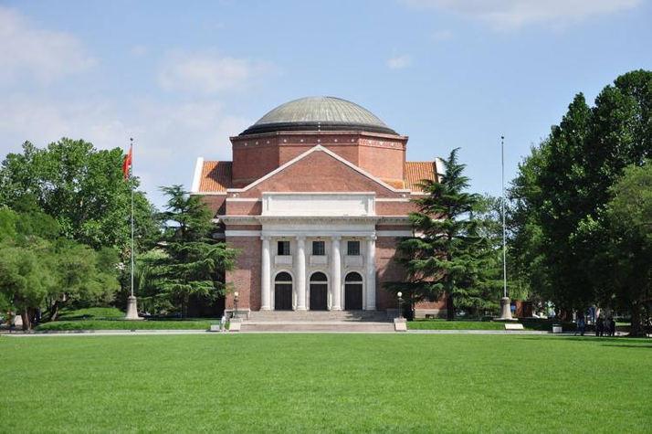7) 水木清华
水木清华是清华园内地处工字厅后门外的一处胜景，清华园的名字即来源于此，被称作“园中之园”。这里因为环境特别优雅，所以也被选为读书学习和小憩的地方。据传康熙皇帝曾移步来到工字厅北侧，发现这里竟然是“山林变幻，环拢一泓清水；绿树点点，簇拥一栋古屋”。他不禁联想到晋朝谢混所作之诗：“景昃鸣禽集，水木湛清华”，于是，这位帝王欣然抬笔，题写下“水木清华”四字。水木清华的设计也是独具匠心，山林环绕着一池碧水，山水之间有两座古亭，“闻亭”和“自清亭”。1978 年，为纪念朱自清先生逝世30周年，学校把荷花池东侧“迤东亭”改名为“自清亭”，并在塘北树立朱自清先生的汉白玉塑像。
水木清华的主体景观是一片荷花池。荷花池是清华园水系的“两湖一河”中。其中的一湖，另外一湖是指近春园的“荷塘”，一河指的是万泉河。“两处荷塘争月色”是许多人常误将“水木清华”处的荷塘误认为是《荷塘月色》中的荷塘，所以被认为是“清华四怪”的第三怪。这里的景色随四季变换呈现出不同的感觉：夏天的时候荷花盛开，一片葱郁之色；冬季白雪落于池面，也别有一番景致。这是水木清华的正廊，正额上题“水木清华”四个字，庄严秀美，有记载是康熙皇帝的御笔亲书。柱子上悬挂的一副名联，撰写人是道光年间的进士殷兆镛。“槛外山光历春夏秋冬万千变幻都非凡境，窗中云影任东西南北去来澹(dàn)荡洵(xún)是仙居”（目前这一版是清华艺术博物馆馆长杜鹏飞仿写的），这也说明了水木清华虽经过百年历史磨难仍梦迹般地存留了下来。
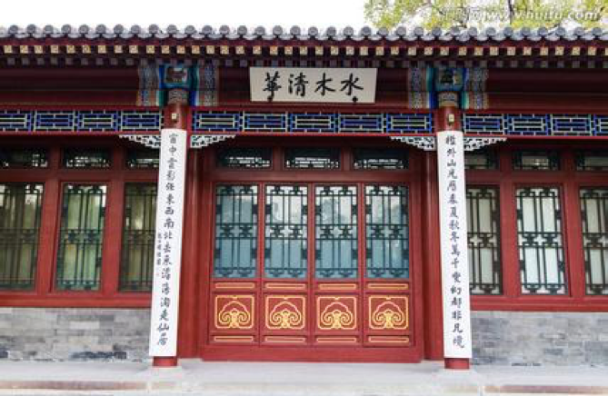8）近春园
近春园原为康熙皇帝的熙春园的中心地带，属于“圆明五园”之一。清朝道光二年，道光帝将熙春园一分为二，东为熙春园，他将其赐给他的第五个儿子，称其“小五爷园”，西为近春园，后为清咸丰皇帝做皇子时的旧居。近春园核心景观是朱自清笔下的“荷塘月色”及其包围着的一座岛，岛上有高低的山丘和树林掩映，岛西南侧有一古式长廊，此岛通过一座汉白玉拱桥与岸边相连。1979 年清华大学重修荒岛上原有的建筑，并陆续建了东山的“荷塘月色亭”和西南方向由邓小平题词的“晗亭”，之后成为近春园遗址公园，是校内师生员工休闲的场所。1982 年，为纪念朱自清先生在此写下的名篇《荷塘月色》而建立了“荷塘月色亭”。每到夏天，便有很多慕名而来的游客前来寻找“荷塘月色”的胜景，带着月色，吹着微风，默念着《荷塘月色》的诗句，大家仿佛还可以与朱自清先生感受到别样的荷塘。
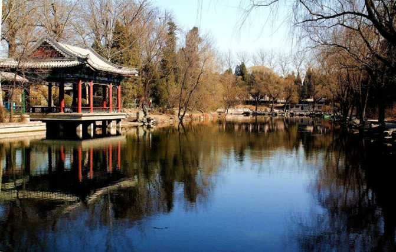